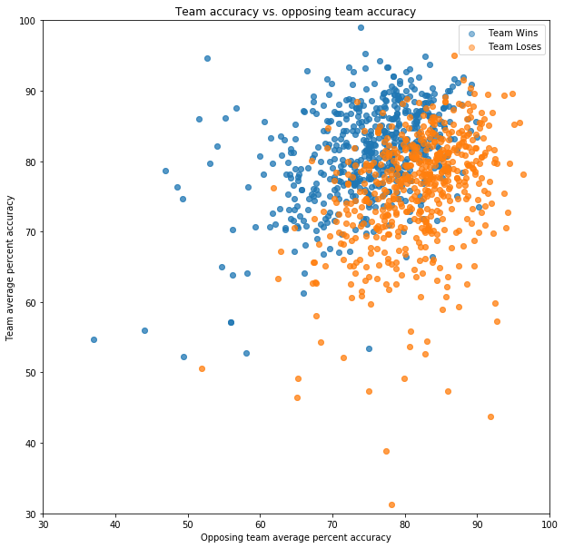
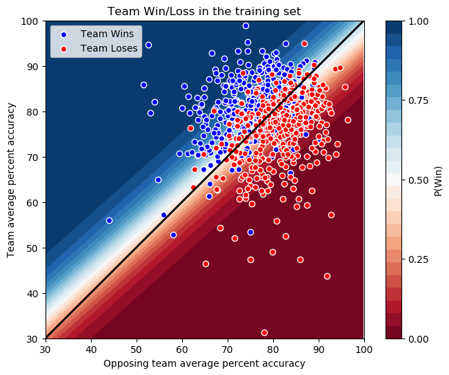
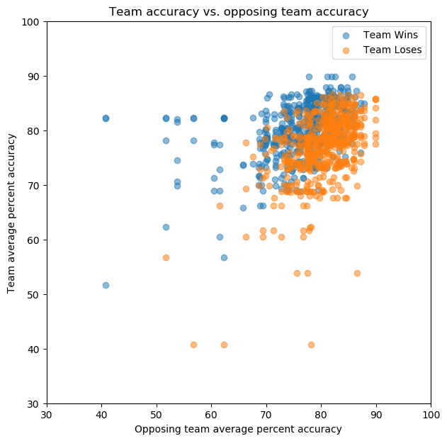
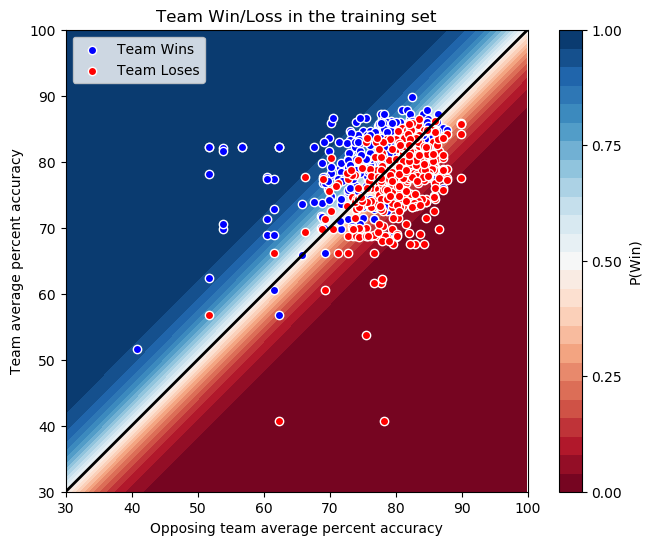

Beyond the obvious application in sports betting, finding ways to improve your team’s chances of winning is the key to effective coaching. In curling, coaching focuses on two areas:
In practice, winning or losing a curling game is based primarily on a combination of a team and their opponent’s strategy and accuracy. A team’s strategy is a little difficult to quantify, but a lot of effort goes into quantifying a team’s accuracy, in what are called “the stats”.
You can read in detail how curling stats are assigned here, but it basically boils down to “for every shot, assign an integer number score between 0 and 4, where 0 is a total miss, and 4 is perfect execution.” In our database of data extracted from the shot-by-shot summary PDF documents, this information is stored in the shots table in the percent_score column. You can find the Jupyter notebook for this analysis here.
One thing we need to keep in mind with this data, once again, is that it represents international level competition. So, we expect these teams to have some of the most accurate shooters in the world, and to be well versed in the finer details of curling strategy. However, this could work to our advantage. If the teams are all roughly on the same level in terms of strategy, then the winner of the game should be decided almost entirely by the shot accuracy of each of the teams.
To see how well this hypothesis holds, I found the average percent_score for each team as a whole in each game by averaging the percent_score values sharing the same game_id and stone color. To draw a relationship between winning and losing without double-counting games, for each game I randomly selected a stone color to denote as the “Team”, hence labeling the other team as the “Opposing Team”. For the 1100 games with shot accuracy statistics, plotting team accuracy vs. opposing team accuracy, and whether the team won or lost, we arrive at the following plot.

What we see here is that there is actually a pretty good relationship between the average shot accuracy of a team, the average shot accuracy of the opposing team, and whether the team wins or loses the game. Indeed, it looks like our expectation of “the more accurate team wins the game” roughly holds (i.e. a decision boundary of y = x). However, we can clearly see that Win and Loss are not perfectly separated by y = x, so it would be nice to have a model that attaches probabilities to its predictions.
Given that we only have 2 features and a linear decision boundary, logistic regression seems like a good choice here. Training the LogisticRegression model from sklearn.linear_model on a training set consisting of 70% of our data, we find an accuracy of 77% on the training set, and an accuracy of 82% on the test set. So we can do a pretty good job of predicting the winner even with data as coarse-grained as the average accuracy of each team in the game. To better understand this model, let’s take a look at the probability map, with the data and the expected y = x decision boundary superimposed on top.

The surprising thing about the above plot is that our decision boundary (the white line where P(Win) = 0.50) is not y = x. We selected the team and opposing team randomly, so there’s no reason for the model to prefer a team with lower accuracy winning over a team with higher accuracy. However, there are a few things to keep in mind:
So, this model appears to be biased somewhat by the specific data points in this training set. It nonetheless demonstrates that there is a relationship between shot accuracy and game outcome in this data, with significant prediction power.
However, predicting the outcome of a game that’s already happened based on the average team performance during that game isn’t terribly useful. What would be really interesting is if we could predict the outcome of a future game using a team’s average performance over many games. Thankfully, our data has enough information to attempt that.
Within each event, the same team name and game type (Men or Women) represents the same team of players. Events typically consist of “round robin play”, where all teams play each other, and then semi-finals and finals based on how well they do in round robin play. So we could use data on round robin play to predict who wins the Finals, but in this data set that means only 24 Finals games, a relatively small number of data points to train a model on. However, if we assume that a team’s average accuracy over all games is a good predictor of the team’s accuracy in a given game, we can just use all the games in our data set, using in our model the average shot accuracy over all games the team played, instead of just their average shot accuracy for that game.
Computing those averages, I noticed that there are a small number of outlier cases where a team appears to have only played one game in an event. To prevent this from skewing the model, games with a team with an average shot accuracy based on fewer than 100 shots were excluded. Plotting the 1077 games that remain gives us the following:

So, we see that the points are more tightly clustered, which we’d expect having averaged the teams’ accuracy over many games, and used the average instead of the higher-spread individual-game accuracy. It’s also notable that there still appears to be a good amount of discriminatory power here. Training a logistic regression model on 70% of this data gives us an accuracy of 74% on the training set, and 73% on the test set. This is not as good as the model based on the actual in-game data, but is still pretty good. Plotting the probability map with the training set and the expected y = x decision boundary superimposed gives us:

Here the logistic regression model appears to have found the expected y = x decision boundary, possibly helped along by the tighter clustering of the points. The area between 0% and 100% probability of the team winning is more compressed here due to this as well. How accurate these probability estimates are is something that is probably worth additional investigation in a future analysis.
We’ve seen how the shot accuracy of the two teams playing a game has predictive power as to who wins the game, and that this also extends to a team’s average performance, giving us the power to make predictions for future games. I’ve trained a logistic regression model to do so with almost 75% accuracy, which also provides probability estimates of its predicted outcomes.
This is probably the simplest model possible for this data, and its accuracy is already pretty good. We’ve only scratched the surface here, as there is much more that can be considered:
One thing is for sure: There is a relationship between a team’s shot accuracy, their opponent’s shot accuracy, and whether they win or lose the game. Building a more fine-grained model taking into account these additional features may allow us to more accurately predict the game outcome. Also, incorporating some of the above questions makes the model more valuable to coaching, as you can target your players’ practice in improving accuracy in areas most likely to have the highest impact on your team’s success. So, this study is just the beginning of my look into shot accuracy and predicting the winner of curling games. Stay tuned for a more detailed analysis of this topic in the future!